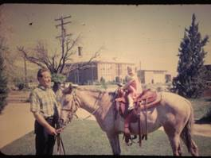
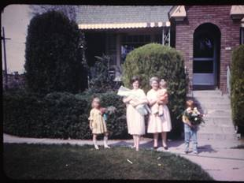
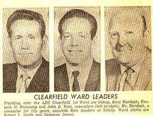
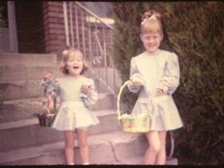
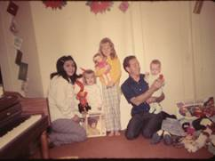
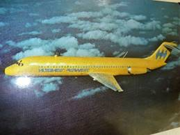
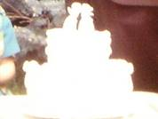

Chapter 19 – HOME IN CLEARFIELD ON NORTH MAIN STREET – June 1969 to June 1971
We had moved into Uncle Dale and Aunt Esther's home in Clearfield. They had built a new home in West Point and had moved there and were just going to rent this home in Clearfield. They rented it to us. It was a beautiful home with beautiful landscaping. It had about 3 large blue spruce trees, a rose garden, beautiful shrubs all around the home, ivy that covered the brick by the end of the summers. It had a circular driveway. In the front room there was a gas log fireplace which we enjoyed. It had a large kitchen; a family room and bedroom were downstairs. It had a large front porch and land in back to have animals. We did have rabbits (for Sandi to care for and learn responsibility) and horses. Larry & Ken had gotten horses instead of pay for a job they had done. The man couldn't afford to pay them, but would give them his horses. We had Bonnie, an older stubborn horse and Kendee, a young Appalachia. Kendee was great and we all loved her, but Bonnie was slow, so she was good to put the younger children on.
We moved to this house in February of 1969. We rented the home in Ogden for about three months. The people didn’t pay us the rent on time. They were wrecking our home so we finally were able to sell it and get the people out this way. We lost $90.00 and had to paint the entire house, put in new screen doors, windows, etc. The people who bought our home didn’t have cash for the equity so we agreed to let them have it and pay our equity to us on escrow. We later had to give our escrow to Moyes Glass and Paint Company for the bill we owed on Larry & Ken’s Contracting business – B & B Contractors. We had gotten so far behind on our bills with the business not working out. We lived off of our two years supply as long as we could and finally had to go on church welfare to try and get caught up. This was very embarrassing for me, but humbling, as I wanted to be independent and hated to ask for help. Also, Uncle Dale helped us by letting us get behind on the rent and catching up later when we were able. Dad and Mom also gave us money and bought food and clothes occasionally. They were wonderful to us.
South Fork above Huntsville –When we were living in Ogden and Clearfield, we used to take the children camping or for a picnic up South Fork Canyon to the campgrounds there. It was a pretty area and fairly close when we lived in Ogden. One or more times, we continued on that road up to Monte Cristo and camped there. I didn’t like it as well as there were large horse flies there and they bit hard.
My first position in the Clearfield 1st ward was Trekker teacher in Primary. It was in the middle of the year when they had called the Trekker teacher to be the chorister in YWMIA. She loved these boys and so hated to leave them and couldn't understand why someone else couldn't have been the chorister, but she being a faithful member of the church, accepted this position. Her trekker boys loved her too and were very upset that she wasn't going to be their teacher any longer. So - this was a hard position for me to step into. I remember my first day at primary very well. Before opening exercises started, I tried to be friendly to the boys, but they wouldn't warm up at all. In fact, the one boy scooted away from me and gave me a dirty look. In class, it was a nightmare. They were yelling, climbing under and over the chairs and benches. (Our room was the scout room) They wouldn't listen to me give the lesson and were "out of control". When I got home, I fell into the big chair and wondered what I had gotten into by accepting this call. I have had many challenges in my experience of teaching positions and this was surely another one of them. I'm not a quitter - so I began thinking of different ways to present the lessons, of ways to show the boys that I cared about them, I made them a birthday cake for their birthday, etc. A couple of hard months later, I gave a lesson on knot tying. I was good at this because I had been over girl’s camp so much and the certification program. When the boys saw that I could tie knots, they were impressed and that was the turning point. It got better and better and by the end of the year, the boys loved me and I surely loved them. One of the boys was named Lane Adams. He was the hardest to warm up to, but in the end was one of my favorites. He would come over to our home and help me weed my rose garden, etc.
Randy Higley was a challenge because he had been brain washed by his mother and others that he had a learning disability and couldn't learn and do like other children his age. The boys had to pass off certain requirements to earn badges. His mother told me, right in front of Randy that he wouldn't be able to do all these things and that school teachers and other church teachers had made allowances because of his learning disability. I didn't buy that. Randy could do more than his mother acknowledged. The elementary school was just across the road from our home and so I had Randy come over after school and I would go over and over with him the articles of faith, tying knots and the other things he needed to learn. Sometimes he would get frustrated and blurt out "I can't do it". I would say "yes, you can Randy and I will help you". He did learn them and pass them off much to the surprise of his mother. She was proud of him.
About this time, I was called to be the Primary President. Since we had just moved into the ward a few months ago and I had been in Primary and hadn't gotten to know very many sisters, I didn't know who to call for my counselors. Kent Murdock was the counselor over the primary at that time and he told me to fast and pray about it and go over the ward list and I would be able to choose the ones the Lord would have serve with me. I was in the PTA of the elementary school as Sandi was in the 2nd or 3rd grade. I finally choose two of the sisters I worked with in the PTA from our ward. I called Bro. Murdock and gave him the names. He said "I feel good about the one, but I think we better fast & pray a little longer about another name." I felt very good that he had been fasting and praying also to help me choose the right ones. Finally, I felt good about another sister and called him. He said "yes, that’s the one I feel should be your other counselor". They were excellent counselors and we grew to love each other as we worked together as a presidency. I was thankful for Bro. Murdock and for the Lord giving me these sisters to be my counselors.
I decided to have the secretary stay in from the last presidency since she had not been in very long and was doing a good job. Ione Adams (Lane Adams's mom) was my first counselor and Carolyn Cue was my other counselor. That was in 1969. It is now 1998 and Carolyn and I have kept in touch throughout these years. We used to get together for lunch once in a while, but now we just keep in touch at Christmas through notes and letters and Christmas cards. They are great women. I have special memories of working together on the Primary Sacrament meeting program, Mom & Miss party, Ward dinners that we were in charge of, pennies by the inch, etc., etc. I can't remember how long we served together (probably only about a year as we only lived in Clearfield two years).
While I was Primary President, one Saturday I was at the church for a "Miss and her Mom" party when we heard fire Syrians. Someone ran into the church where I was and told me it looked like smoke was coming from our home. I ran outside and looked, and sure enough it looked like it was coming from there. One of the ladies offered to take me home, so I jumped into her car. We had a hard time getting there because the traffic was so bad and they had the road blocked off. I jumped out of the car and took off running. I was very relieved when I saw Sandi and the younger children standing on the other side of the street with our neighbors. It wasn't our home that was on fire, but the old canning factory which was just south of our home. They were spraying down our home though as the flames were so hot that they were afraid our home would catch on fire also. Sandi was tending her younger brothers & sisters while I was at the party at the church. She was very responsible and I believe had been the one who called the fire department. She had quickly gotten the younger children outside and across the street. She was holding David and Shellie & Mike were standing by her. I was so thankful they were alright.
Also, while we were living in Clearfield, Larry & Ken decided we should go on a pack-in trip for a vacation and go to Pinedale, Wyoming. (Anyway, I think it was Pinedale) They wanted to take Tammy & I and also invite John & Linda & Bob & Pauline, our other good friends from Ogden. They wanted to go for a week. I was against it for several reasons. 1) Ken was saying we were going and I didn't like to be told I had to go.(Guess I'm pretty ornery sometimes) 2) I was nursing Mike and he was only about six months old and I usually nursed my babies until they were at least 9 months old and I didn't want to have to quit nursing him, and I would have to if I were to be gone for a week. 3) I had had a couple of bad experiences with horses and going with Larry. The most recent was going up one of the canyons, coming home scratched up from following Larry through the trees and bushes, saddle sore, sunburned and feeling miserable. I liked going on short rides on the horses, but not all-day rides. I felt with going on a pack-in trip, it would be another miserable time. Ken really wanted to go and was stubborn and wouldn't take "no" for an answer. I got pretty upset and I remember my wonderful dad coming over for lunch (he worked part-time for my Uncle Dale at his farm manufacturing company "Clear-field Manufacturing" which was next door on the north.) He would come over for lunch sometimes and I enjoyed visiting with him. One day I was telling him about Ken wanting us to go on this pack-in trip to Wyoming. I told him how I felt and he told me I needed to stand up for myself - that I was a lot like my sweet little Grandma Bushnell, and that Grandpa Bushnell always bossed grandma around and didn't treat her very good, but when she finally stood up for herself (after her children were raised) he respected her more, treated her better and they had a much better relationship. He told me that if I didn't want to go on this pack-in trip, I shouldn't have to. He was cute. Well, Ken still won out in the end - but I am glad he did as I did have a wonderful time. Larry & Ken borrowed some big pack horses and cattle trucks from a friend in Wyoming that they built a home for (actually a home out of a schoolhouse) We drove to their place, put the horses in the big cattle trucks and headed up to the mountains. We parked at a certain place, put everything on those pack horses, then we got on our horses. I think I was riding Bonnie and Ken was on Kendee and us four couples started off. The area where we went was so beautiful. No motorized vehicle could go there, only horses or hikers. It was so beautiful. We followed each other on a trail and rode by beautiful lakes, river, and meadows. We saw lots of wildlife. It was so beautiful and peaceful. I don't think I have been to a more beautiful, wonderful, peaceful place. We camped at a lake. The guys fished and Tammy, Pauline, Linda and I visited and relaxed. It was so wonderful. We had a close call on the way back, however. Ken was driving one of the big cattle trucks and one of the horses slipped and caused the truck to swerve off the road. The Lord was watching over us because over half of the truck was over the mountain. The only thing that was holding it back, keeping it from going over the cliff was a small tree. As we think about it now, it was truly a miracle. Larry quickly stopped, ran over to us, opened the passenger door and helped us out. Ken had his foot on the brake, but Larry helped Bob, Pauline and then me out of the truck. Larry then ran over, jumped back into his truck and backed it behind the truck Ken was in. He took a big chain and fashioned it to both trucks and then pulled Ken's back onto the road. It was hard to watch, and I was praying with all my might that Ken would be OK. The horses were all upset and were rearing, etc., and the truck was swaying back and forth. I could just imagine at any moment that little tree breaking and Ken being hurled off that mountain in the truck. If that had happened, there would not be any chance that he could have come out alive. I'm so thankful to the Lord that our lives were spared that day. Pauline was so shaken that she would not get back into the truck. She started walking down the road. She had walked quite a way before we all convinced her that she couldn't walk all the way to the bottom of the mountain, so she finally got back in, but was very nervous until we got home. To tell the truth, I was also. Pauline was an English girl and had a cute assent. Her & Bob are special friends.
Kent Murdock was called to be the Bishop and he asked Ken to be his 1st counselor. With us having a young family, they didn't want both of us to be in executive positions so I was released. After Ken was put in the Bishopric, I asked him if he would talk to the Bishop about letting me be the Young Marrieds’ leader in our ward. I had enjoyed it so much in the Mount Fort Ward and we didn’t have one going in the Clearfield lst Ward. I was sustained in this position in September. Our opening social was September the 12th, the day David was born, so Delvin and Dalene Reed, my assistants took over. Later Ranae Barney was put in as my assistant and we became great friends. Ranae is a different lady, she is a worker and very creative. She did an amazing job as my assistant. However, she offended many people by the things she said and the way she said them. The funny thing is that she would become offended very easily, But, her and I got along great and grew to love each other. In January Dona Kolb, the Relief Society President moved to Roy, and Maurine Sanders was put in as the new president. She asked for John’s wife, Amy, and myself to be her counselors. I turned it down as both Ken and I felt that with the size of our family and with them being so small, it would be too hard as I would have to leave them so much. I talked to Dona and she verified it. She said it was too much on a woman with a small family. That she couldn’t have done it except that her husband worked nights so he tended the children while she went to Relief Society and visited the sisters and had her other meetings. She was my age and had three small girls. Our Relief Society meetings and activities were held during the week, not on Sundays like they are now. Later on that month they asked for me to teach the Spiritual Living class in Relief Society as Maurine had taught it before she was put in as President.
I remember well the night the Bishopric came over to ask me to be the Spiritual Living Teacher in Relief Society. I wanted to say "no" because I was really nervous about teaching the women in our ward, especially the Spiritual Living lessons. There were many older sisters who were very well versed in the scriptures and I felt one of them should have been the teacher, not me as I was young and not very well versed. I guess the Lord knew I needed to study the scriptures more - so I accepted. I remember being so nervous about giving that first lesson. I had about a month to prepare so I studied hard, made visual aids, fasted and prayed. Our Relief Society meetings were on Tuesday mornings. I remember going there, going to prayer meeting and sitting on the front row in the Relief Society room. I felt like I would pass out, and was sure that when I got in front of these sisters, I would pass out, but when I got up there and started to give the lesson, all the fear went away from me and I was able to give the lesson better than I had prepared and I felt the spirit of the Holy Ghost guiding me and helping me. It was such a warm, wonderful feeling and I was actually enjoying giving the lesson. When it was over many of the sisters came up and told me what a good lesson it was and how they had enjoyed and gained a lot from it. I was so happy. I knew my Heavenly Father had answered my prayers, and then I knew the meaning of the scripture which has come to be my favorite. Nephi is speaking - "I will go and do the things which the Lord has commanded for I know that the Lord giveth no commandments unto the children of men save he shall prepare a way that they can accomplish the thing that he has commanded them". This has given me courage to accept the calls that have come to me, even though many times I felt inadequate. My patriarcharal blessing tells me that I would be a leader among women and so I know that I am not to turn down these callings, and I have tried to accept and magnify them with the Lord's help. As I would try to do my best and ask the Lord for help, he has helped me greatly and I have been very blessed throughout my life.
While here in Clearfield, my Mom really encouraged me to finish the requirements and get my "Golden Gleaner" award. They don't have these awards anymore, in fact, they did away with them right after I received mine. You had to finish all the requirements for this award before the age of 30. I was 29 and Mom said that I should get an application and see if I hadn't already accomplished most of the requirements. I did and found that I had, indeed, fulfilled most of these requirements from being in Leadership positions, speaking in church, fulfilling other church callings, etc. I did have several to finish up, however, and I was expecting David and didn't feel up to all that I still needed to do. Mom kept after me, however, and so I did eventually earn this award before the age of 30. They recognized me at Sacrament Meeting and presented me with a medallion. Up to this point, the church had a special recognition banquet in Salt Lake City for all who had earned this special "Golden Gleaner" award for the women and "Golden M Men" for the men. With the church becoming so wide spread and even thought this was a small percentage of the men and women of the church who had earned this award, it was still getting harder to have a banquet for this many people - and so they discontinued it. I didn't go to a banquet, but that was ok. I'm sure I grew from doing these requirements
.
I didn’t love sewing, but I was excited that I could make clothes for our children and I loved dressing my daughters in “Look Alike” clothes. I also made pull-over shirts for our sons and many times I would make them out of the same material, so they all matched too. They didn’t mind it when they were young. I made dresses, tops, shawls & pajamas for the girls, and shirts and pajamas for the boys. I tried to make levi’s, but that was too much work. I made clothes for myself too and some of my favorites were clothes I had made. When we were living in Arizona, the first time, Shellie was mopping around and I asked her why she was sad. She said “You make clothes for Sandy, but not for me”. I hadn’t realized that it had been that long since I had sewn anything for her. I told her that we would go shopping the next day and she could pick out the pattern, material, lace or whatever she wanted and I would make a dress for her. She was so excited, and we had fun shopping together. She picked out a cute pattern and material, and after it was finished, she looked so cute in it and she loved it.

Larina, our Indian Foster daughter on the Indian Placement Program, was still living with us when we lived in Clearfield. She graduated from Clearfield High. When we moved to Clearfield, Larina became friends with Debbie Higley. Debbie was a darling girl. She was overweight and a little plain, but had a darling personality. We were glad her and Larina became friends. Debbie quickly grew to love our children and would love to come to our home and play with the kids and read them stories. Larina, it seemed came second place, when Debbie was at our home. After Larina graduated and went back to Idaho, we had Debbie baby sit for us. Even when she had other plans, she would cancel them to come and tend our children. She was the best babysitter we ever had. She loved the children and they loved her, and Ken & I loved her too.
When Mike was only about 7 months old, I got pregnant again. I was concerned because the baby would just be 16 & ½ months younger than Mike and I didn't know how I would manage especially since Ken was gone so much with being in the Bishopric.
When we moved to Clearfield, Ken decided he had better try to get a job back in computer programming. With him being out for about two years, it wasn't easy. Browning Arms up in Mountain Green was looking for a programmer so Ken went to apply for it. At first, they didn't want to even consider him, but he told them he would work for such a low wage and that after he proved himself, they could raise him to the wage that were planning to pay. The supervisor said "What can we lose" so they hired him. It was such a low wage that we were not able to pay our bills so we used our food storage instead of buying groceries. Ken did prove himself, but about that time the owner of the company, Val Browning, who was a alcoholic had bought a company, Jarmans, at a party when he was drunk. Jarmans was about bankrupt - so that put Browning Arms in a tight squeeze. When Ken's supervisor went to get the raise for him, he was told that there was a freeze on wages and they couldn't give him the raise he deserved. By this time, we had used up our food storage and had to be put on church welfare. I hated this. I always want to be self-sufficient and I didn't like being on church welfare. We were only on it about 2 or 3 months when we felt we needed a vacation.
Ken needed to get away and I did also. Larry & Tammy had moved to Mesa, Arizona because of Larry's health. He had rheumatoid arthritis and it was really hard on him living in Liberty so they had moved to Mesa for the warm weather. They invited us to come down - so we took Mom so she could visit her brother, Uncle Van and his wife, Aunt Allison, who were living there while Uncle Van was going to Arizona University in Tempe to get his doctor's degree in business. Mom said she would pay for half the gas since she was going with us. That really helped with our finances. We really enjoyed the vacation. We went in March I believe, which is the best time in Arizona. The orange blossoms are out and it is beautiful with the flowers, warm weather, etc. We stopped at Hoover Dam on the way down & other places. Larry & Tammy were happy to have us there as we had missed each other, and the children were really happy to be together as they had played together so much and were good friends. Lori & Sandi were the same age, Holly was a few months older than Shellie, Lonnie was a little older than Mike and David & Jody were the same age. In fact, they were born on the same day. Tammy was due a month later than I was and she had made the comment that I should go 2 weeks over and she should come 2 weeks early and we could be together in the hospital. I told her that it would be great for her, but I didn't want to go two weeks over my due date. Well, it turned out that I did go over two weeks and the doctor finally scheduled me to go in on the 12th of September and he would start me. The night of the 11th, Tammy called me and said "well, Mae, I'm on my way to the hospital. The pains are 5 minutes apart - so I'll save you a bed right next to me". We had a friend in the ward who was a nurse at the McKay hospital and after Tammy had Jody and was in the ward. She asked this friend if she could save the bed next to her for me as I was at the hospital now. She said "sure, that would be great". It was great. Tammy & I had a wonderful time being together with our new babies for four days. It was funny, thought because she was sure she was going to have a boy and I was sure I was going to have a girl, and we each had just the opposite. They were both beautiful babies and have been special children.
Anyway, back to the vacation. Larry had a friend and neighbor, Ron Shumway, who was the data processing manager at Hughes Air West Airlines. They called it the “The Yellow Banana”. Larry introduced Ken to Ron after church and told Ron about Ken. Ron needed to hire another programmer so was interested and had Ken go in to his office for an interview. He gave Ken some Cobalt (new programming language) books to study and then would fly him down to test him on it later. That happened and Ron offered Ken the job. We were excited as it was a big raise - a lot more than he would have made at Browning Arms even if they had given him the raise. We were sad to leave our parents, brothers & sisters and their families, however and so Ken approached his boss at Browning Arms to tell him of the offer. He asked Ken how much he would have to have in order for him to keep him at Browning Arms. Ken quoted a figure and it was less than he had been offered by Ron. His supervisor said "keep working, I need you here, I'll go approach the big boss. He came back after a couple of hours and said "Ken, you're crazy if you don't accept that offer. They say the freeze is still on and won't let me give you the raise". So, Ken quit. Ron wanted Ken to start as soon as possible so he did. Because he was working for the airlines, Ron told him he could fly home Friday after work and fly back Sunday night. He stayed with Larry & Tammy for three months as I hated to take Sandi out of school and have her start in a new school just 3 months before school was out. Anyway, it gave me time to sort through everything and get packed and with Ken coming home every weekend, it wasn't so bad.
Delvin and Dalean Reed had moved so I carried on the Young Married program alone. (I still held this position as well as Spiritual Living Teacher) RaNae Barney offered to help me as she also loved this program and hoped to activate her husband through this program. RaNae really has a different personality. She says what she thinks and throws digs at people, and many people are offended, but she doesn’t mean it that way and doesn’t mean to hurt people. In fact, if she thinks she has offended someone she worries and really lets it upset her. She was also really sensitive so you had to watch what you said to her as she might take it the wrong way. We got to be good friends working closely together, and she went out of her way to do things for me. I really appreciated her friendship. When we moved to come down to Arizona, the Young Marrieds gave Ken and I a beautiful cake (it looked like a wedding cake, it had two little kissing cupids on top) which Beverly McMillan had made. She was the Junior Sunday School Coordinator, a wonderful sister and a cake decorator. They also gave me a beautiful orchard for me to wear for “Mother’s Day” which was the next day. They had a sign by the cake which read - “You are our angels sent from Heaven above.” RaNae and Shirley Murdock were largely responsible for this, collecting money, making arrangements, etc. RaNae gave a beautiful speech about us, it was really a surprise and a thrill. The Bishopric and clerks gave a party for us also and gave us a beautiful electric living room clock.